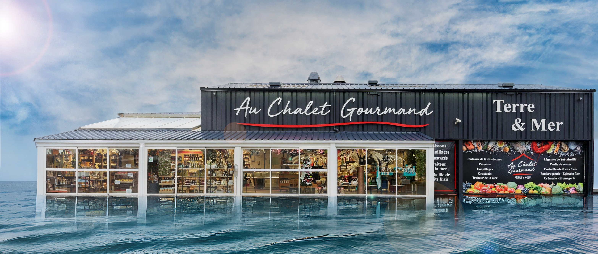

Notre Histoire

Ouverte depuis 2015 par Anne-Laure Gaumain au cœur de Barneville-Carteret, la boutique-poissonnerie Au Chalet Gourmand est née d'une passion profonde pour les richesses culinaires de notre belle Normandie.
L'Amour du Terroir et des Circuits Courts
Notre mission est simple : offrir à nos clients le meilleur de la terre et de la mer. Nous travaillons main dans la main avec des producteurs et professionnels locaux reconnus. Vous retrouverez sur nos étals les huîtres de Paolo, ou encore les fruits de mer et poissons pêchés par Gilles Muzard et Laurent Blondel, figures emblématiques de la pêche à Carteret. Côté terre, nous privilégions les fruits et légumes cultivés sur nos terres maraîchères de Surtainville.
Une Équipe à votre écoute
Que vous souhaitiez commander une choucroute de la mer, une paella, ou composer un repas complet, Anne-Laure et Vanessa mettent tout en œuvre pour vous conseiller avec le sourire et accompagner vos talents culinaires.
"La gourmandise est un art, le terroir est notre inspiration."